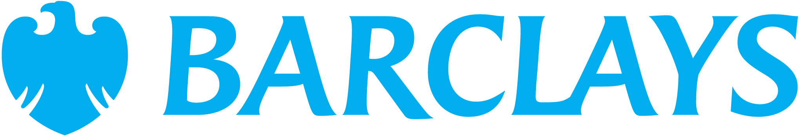
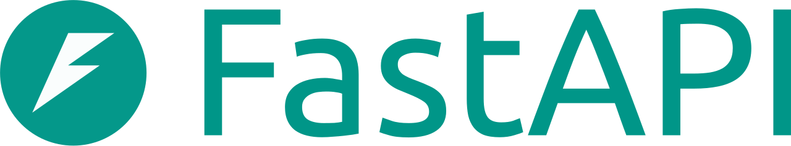

λEigen
Founders
The Team
Andrew Hall
Co-founder · Quant + ML
- Computer Science, machine learning emphasis
- Bayesian methods
- Built the Silver Fund's systematic trading system
- Incoming derivatives trader, Barclays

Justin Hill
Co-founder · Product + Eng
- Senior software engineer, Figma growth and monetization team
- Senior research fellow, Contrary Research
- First cohort, Sandbox
- Incoming MS/MBA, Harvard
λEigen
Build · Architecture
Technical Architecture
Frontend
Next.js
React app router, server components, edge rendering.
Auth
Clerk
Sessions, orgs, and access control.

Backend
FastAPI
Async Python service for inference and orchestration.
Database
Postgres
Campaigns, results, and posteriors. One store.
AI
Anthropic
Variant generation and audience research.
Delivery
Resend
Transactional and marketing send with event hooks.